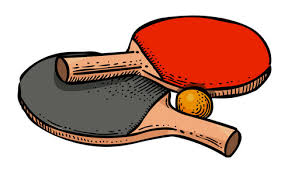

桌球是一種在世界上許多地方流行的球類運動，同羽球、網球等運動，也是球拍運動的一種。英語官方名稱「 table tennis 」，意即「桌上網球」。雙方球員手持球拍、隔著架有球網的球桌對打。可分為單打或雙打，兩方互相擊球直至一方無法回球，另一方便能得分。桌球由網球發展而來，起源於 19 世紀末的英國。歐洲人熱愛網球運動，但因為受到場地和天氣的限制，他們將網球運動搬到室內，以餐桌作為賽場，慢慢發展出桌球運動。也有一說是 1890 年幾名在印度的海軍官發覺在 1 張不大的台子上玩網球頗為刺激。後來改用空心的小皮球代替彈性不大的實心球，並用木板代替了網拍。最初稱為「桌面網球」（ table tennis ）。一位美國製造商以桌球撞擊時所發出的聲音創造出 ping – pong 作為他製造的「桌球」專利註冊商標，後來逐漸為桌球的正式名稱。
